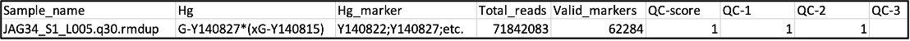
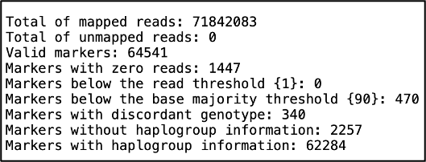
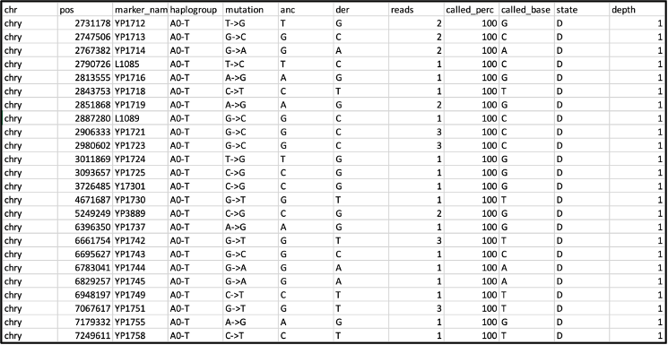
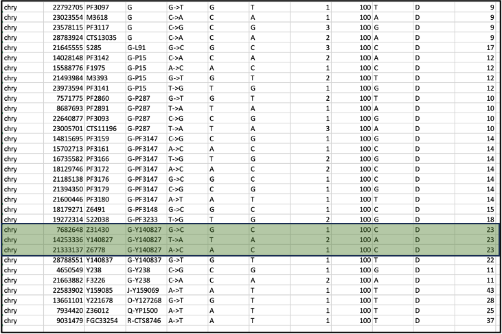
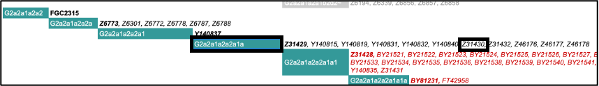
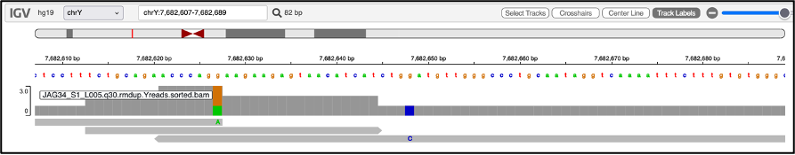

10 Y-chromosomal haplogroup inference with Yleaf
10.1 Resources
10.1.1 Original publication
Ralf, Arwin, et al. “Yleaf: software for human Y-chromosomal haplogroup inference from next-generation sequencing data.” Molecular biology and evolution 35.5 (2018): 1291-1294. (Ralf et al. 2018)
10.1.2 Software and manual
Please see the Yleaf-github-page
10.2 Background to Y-chromosomal haplogroup assignment
The human Y-chromosome haplogroup is determined by single-nucleotide polymorphisms (SNP), markers that are located in the non-recombining portion of the chromosome (NRY) which is passed down from father to son. Knowing the haplogroup can therefore be informative about biological relatedness through the paternal lineage, as well as for exploring human mobility and migration, as one can trace haplotypes’ dispersal times and geographic distributions. The mutations that accumulate over time provide us with a Y-chromosome phylogenetic tree, and a system has been developed for naming the major clades and subclades. As more SNPs are discovered, the phylogenetic tree continues to expand with the nomenclature having to continually adapt.
10.3 What is Yleaf?
Yleaf is a python-based tool for Linux for high-resolution NRY SNP calling and haplogroup inference from NGS data, independent of library and sequencing methods
10.3.1 What are the advantage of using Yleaf?
- publicly available
- automated
- user-friendly
- customisable
- versatile
- multithreading option
- built-in batch option
- optimized for large NGS data sets such as whole genomes
10.3.2 How does Yleaf compare to other tools?
Yleaf was tested on modern and ancient published datasets, and produced high concordance in NRY-SNP calling compared to well-established tools such as SAMtools/BCFtools (Li et al. 2009), and GATK HaplotypeCaller (McKenna et al. 2010). Yleaf called the lowest number of markers due to stringent options set, however it also appears to provide the highest overall accuracy
10.3.3 How does Yleaf work?
Yleaf requires python 3.6 and currently only works on Linux
- Yleaf works with both raw and aligned sequencing data in a single command
- It accepts raw fastq files, bam, cram and vcf files
- The batch function allows you to provide a path to a folder and it will pick up all the files sharing the same extension
- The raw reads are aligned against the reference human genome (either hg19 or hg38) with minimap2 using default settings, which creates a SAM file. (There is also a multi-threading option -t)
- The SAM file is converted to a BAM file with SAMtools, sorted and indexed.
For ancient DNA it is advised to rather supply Yleaf with your quality-filtered BAM files
- The BAM file is filtered on reads only aligning to the Y-chromosome.
- SAMtools mpileup function creates a raw data file for variant calling.
- Yleaf has a function embedded to perform variant calling using the generated pileup file
- An output folder is created containing output files in the root path for each of the input files.
10.4 Installation and first use
The recommended method for installing Yleaf is with conda. The github page provides easy-to-follow instructions as follows:
# On the command line, clone the repository:
git clone https://github.com/genid/Yleaf.git
cd Yleaf
# Create a conda environment called yleaf:
conda env create --file environment_yleaf.yaml
conda activate yleaf
# Enable modification of config file in your cloned folder:
pip install --eManual installation instructions are also provided on the github page.
Your folder will then look like this:

On first use Yleaf will download reference human genome files which you will find inside the directory data, shown above:

Alternatively, you may add custom paths to your own references that you want to use in the config.txt file (shown in Fig.1 above), which looks like this:

10.5 Usage
To use, on your command line type:
Conda activate yleaf
Yleaf –h
This can be called from any directory on your system. The -h (help) flag will show you the various usage options available to adjust parameters such as quality thresholds.

10.5.1 Options that are most relevant for ancient DNA analysis
-r , --reads_threshold: The minimum number of reads for each base. (default=10)-q , --quality_thresh: Minimum quality for each read, integer between 10 and 40. (default=20)-b , --base_majority: The minimum percentage of a base result for acceptance, integer between 50 and 99. (default=90) (i.e. 9 out of 10 reads need to agree with each other for the call to be accepted)-dh, --draw_haplogroups: Draw the predicted haplogroups in the haplogroup tree.-pq , --prediction_quality: stringent default of 0.95. Minimum quality of the prediction for it to be accepted (QC-scores)-old , --use_old: In version 3, Yleaf switched to using Yfull for the underlying tree structure of the haplogroups so predictions are slightly different to earlier versions that used ISOGG. You can use this flag to force it to use the previous method.-aDNA: recently added flag which ignores G > A and C > T mutations.
It is recommended to still use Yleaf without the -aDNA option (or run it twice, with and without) so that you can manually check all mutations in case you wish to consider them in your haplogroup-calling (see further details below).
10.5.2 Minimum usage examples
The recommended input for ancient DNA samples is to supply bam files that you have processed with your usual quality filtering. (This could either be a BAM file that contains only reads you have extracted that align to the Y-chromosome, or you can provide your original BAM file and Yleaf will do that for you):
10.5.2.1 BAM input
Yleaf -bam file.bam -o bam_output --rg hg1910.5.2.2 BAM input with drawing predicted haplogroups in a tree and showing all private mutations
Yleaf -bam file.bam -o bam_output --rg hg19 -dh -p10.5.3 Optimising settings for ancient DNA data
- Read number threshold (-r): The default for this is set to 10 – Note that this should be changed to -r 1, as some SNPs, especially in low coverage genomes, are expected to only have a single read covering them. If you run Yleaf with the default setting, you will obtain a results file but no haplogroup assignment.
- Base quality threshold (-q): The default for this is set to 20, which would allow most bases to be accepted. You may however wish to raise this to -q 30.
Examples:
10.5.3.1 BAM input
Yleaf -bam filename.bam -o bam_output --rg hg19 --r 1 --q 3010.5.3.2 Batch option by providing path to files
Yleaf -bam /path/to/files -o bam_output --rg hg19 --r 1 --q 3010.6 Output and post-processing
10.6.1 The Log file
After running Yleaf you will find a log file in your output directory detailing each process that was run and how long it took. As an example, here is the log file after running a single bam file:

10.6.2 Yleaf Haplogroup prediction function
not suitable for ancient DNA data – see below
You will also find the file Hg_prediction.hg, which is the final haplogroup prediction that Yleaf outputs, using the marker nomenclature from Yfull v10.01 (or if using the -old flag, ISOGG nomenclature), together with quality scores. The quality scores indicate whether the predicted haplogroup follows the expected backbone of the haplogroup tree structure and within-haplogroup tree structure. For further detailed information about these quality scores, please refer to the Yleaf documentation.

This file is discussed here for completeness, however it is not suitable for use with ancient DNA data – for ancient DNA it is essential to carry out manual inspection of the intermediate output files provided, particularly the .out and .fmf files, as explained further below. In addition, if using present-day data, it is nevertheless recommended to perform manual inspection as prediction is not perfect.
You will also find a subdirectory which contains additional files:

Depending on the flags you used when running Yleaf, you may also find here additional files such as .pmu files for private mutations (see below) or .dh files for graphical output of a haplogroup tree.
10.6.3 Quality control files
The .chr file is useful for quality control and is informative about the number and percentage of mapped reads per chromosome (this comes from the output of the SAMtools command, idxstats).

The .info file provides general information such as total number of mapped and unmapped reads, number of markers that met the threshold or failed:

This file can be useful for finetuning your quality thresholds when running Yleaf. For example, this file would be helpful for identifying if you forgot to change the read number flag (-r) to 1.
10.6.4 Manual inspection and haplotype calling of ancient DNA data using the .out file
The most relevant file for performing our own manual inspection and haplotype calling of our ancient DNA data is the .out file. The default output uses the Yfull haplogroup nomenclature (terminal SNP names). Here are the first few rows:

The column ‘reads’ refers to the number of reads after quality filtering, while the column ‘called_per’ refers to the percentage of reads that agree with the final base call, noted in column ‘called_base’. Under ‘state’, A refers to ancestral state (as in column ‘anc’), and D to derived state (column ‘der’), while ‘depth’ indicates the depth of the hit in the YFull(v10.01) tree.
To assign the most derived haplogroup in ancient DNA data, the following steps should be carried out, which you can of course run or automate using your own preferred method:
- Sort the .out file on the “Haplogroup” column
- Filter on derived alleles (D) in the “State” column
- Filter out transition mutations (A-G and C-T mutations) in the “mutation” column for the most conservative approach to calling the Y-chromosome haplogroup. This is because transitions commonly represent ancient damage. However, since C->T and G->A mutations are very common and sometimes the only SNPs for many haplogroup branches, you may wish to consider them too. If your data is single-stranded, you can filter for C->T on the forward strand, and G->A on the reverse strand.
After these steps, you can inspect the most derived SNP with the highest depth, which you will find towards the bottom of the table. Here are the last few rows of the sorted and filtered table. In this example, the data comes from double-stranded, non-UDG-treated libraries, and an approach was taken to filter on transversion-only SNPs:

In this example, we find many positions supporting a G haplogroup, with the highest depth of 23 for the haplogroup G-Y140827 according to the Yfull nomenclature (highlighted in green). (More commonly I would only find one highest-depth call however here we have three). This call is supported by additional upstream markers for the G haplogroup. If there are no other derived markers directly upstream of the most derived haplogroup, such as we see in the last four rows of this table, it suggests a spurious call due to, for example, a sequencing error, contamination, or a private mutation, and therefore you should look instead for the most derived SNP that also has upstream markers along the same branch.
Next, you can visit the website of Yfull (https://www.yfull.com/tree/G/) to find the path of Y-chromosome SNPs back to the root, and check if the derived SNPs make sense (this is what the automated haplogroup prediction does).

You can also visit the ISOGG website (https://isogg.org/tree/ ) and find the haplogroup name according to the ISOGG nomenclature. You can search the page by position or marker name from your output table. For example, the first marker name listed for the highest depth haplogroup is Z31430, which tells us it is haplogroup G2a2a1a2a2a1a:

If we were to search for Z6778, we would find it listed under the slightly less derived G2a2a1a2a2a. We do not find Y140827 in ISOGG, most likely because it is a more recently confirmed marker that is not included in the current version. Haplogroup names change as the tree keeps growing so it is worth looking up the most derived marker in the latest version and use the latest nomenclature. There may also be new downstream markers that are not yet included in Yleaf.
If you use the -old flag when running Yleaf, this outputs ISOGG haplogroup nomenclature as seen in the fourth column of the table below, which shows the last few rows (it may be slightly different from the Yfull results):

This way it is simpler to follow ISOGG’s “path” to see you are on the right track. Here we can see straight away that the most derived haplogroup (after dismissing the last three spurious rows) is G2a2a1a2a2a1 with upstream markers that lead to it. Yfull does not use such a nomenclature system because the ISOGG nomenclature could change over time with the discovery of new SNPs, and it has not been updated in a while, so using the terminal SNP names as in Yfull offers more continuity moving forward.
Where you have few markers supporting a call due to the low coverage of your data, you have the option to be conservative and report a slightly more upstream haplogroup, for example, G2, or G2a2a1a2 if you prefer.
10.6.5 Troubleshooting
An additional file, the .fmf file, is an extended .out file which includes an additional column “description”. This provides information about why a marker did not pass the criteria for haplogroup assignment, for example due to low coverage or being below the base calling threshold. This file can therefore be used to troubleshoot and optimize the settings, for example if you see that many markers were filtered out. If many markers fall below the base majority threshold, it can indicate a contaminated sample, and it could even be possible to identify the haplogroups of both contributors using the .fmf file.

10.6.6 Private mutations
One useful flag is the -p flag, which produces a .pmu file. This lists all identified private mutations with a minor allele frequency below 1% (this threshold can be changed with the -mr flag). It works by ignoring all SNPs that are included in Yfull and therefore associated with a haplogroup, and outputs all other SNPs found in the data. If the position is included in dbSNP (https://www.ncbi.nlm.nih.gov/snp/) it will also output its reference number (rn_no) and population frequency. This can be useful for identifying new variants in understudied populations or identifying subgroups among individuals who share the same haplogroup.

10.7 Follow-up steps for further verification
For questionable calls, it can be helpful to use a graphical interface such as IGV: Integrative Genomics Viewer. Here you can load the bam and bai files (upload them via the “Tracks” option in the menu bar), ensuring you have selected the appropriate reference genome that you used for alignment (you can change it under the “Genome” option in the menu bar), and navigate to the position of the SNP along the read. Let’s say I want to take a closer look at this position from our output table:
I can use the search field to navigate to position chrY: 7682648 and zoom in.

This shows us there is one read covering this position, which has a G->C mutation, corresponding with what the output table states. We see that this SNP falls well inside the middle of the read. SNPs in the middle of a read can be interpreted as more reliable than ones at the ends of reads, which could be a result of ancient DNA damage. In such cases, especially where your data might be limited to transitions, you can check where in the read they are and if you choose, take a more conservative approach by discarding a questionable result, and instead report the haplogroup associated with the next upstream marker. Visualising the results this way can also be helpful in cases where you have two related males with slightly differing haplogroups along the same branch - in this way you can easily visualise if one of them simply lacks reads covering the more derived position that the other individual has.
10.8 Acknowledgements
The author thanks Ralf Arwin and Dion Zandstra for helpful comments and clarifications.
10.9 Data availability
The bam file used in this chapter was analysed as part of Freilich, Suzanne, et al. “Reconstructing genetic histories and social organisation in Neolithic and Bronze Age Croatia.” Scientific Reports 11.1 (2021): 16729 (Freilich et al. 2021), and is available from the European Nucleotide Archive ENA, under run accession ERR6324186, study accession number PRJEB46357.